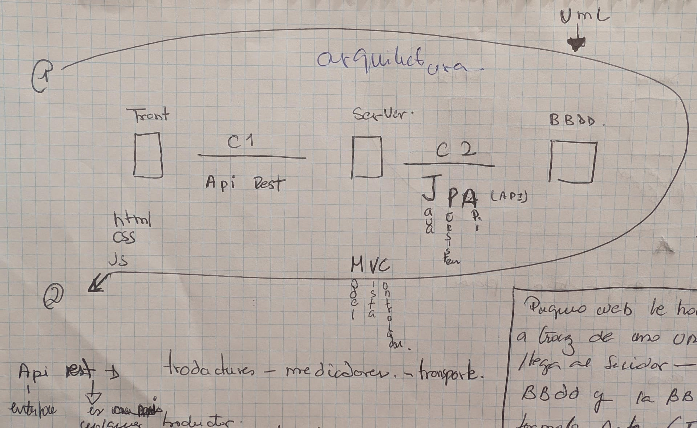

{kind=link}
{kind=link}
---
title: Restaurant Management v0 UML classDiagram
---
classDiagram
Table "1" --* "n" Order
Menu "1" --* "n" Order
class Table{
+String name
+String description
+int qty
}
class Order{
+date date
+String orderNumber
+String waiter
+int peopleqty
+int totalPayment
+bool paid
+Table table
+Menu[] menus
}
class Menu{
+String name
+String totalPayment
+int price
+string conntent
}
Java
¿Qúe es Java ?
Java es un lenguaje de programación orientado a objetos conocido por su portabilidad, seguridad.
JSE : Java Standart Edition.
JDK : Java development Kit.
JRE : Java Runtime Enviroment.
JEE : Java enterprise edition.
Principios de Java
Orientado a objetos:
se refiere al paradigma de programación que se centra en el uso de objetos. Un objeto en Java es una instancia de una clase, y una clase es como un plano o plantilla que define las propiedades y comportamientos de los objetos.
La programación orientada a objetos en Java se basa en cuatro conceptos fundamentales:
Clases: Las clases son como plantillas que definen las propiedades y comportamientos comunes de los objetos. Por ejemplo, puedes tener una clase llamada “Coche” que define las características y acciones comunes a todos los coches.
Objetos: Los objetos son instancias concretas de una clase. Si “Círculo” es una clase, entonces un objeto sería un círculo específico con características y acciones particulares.
Encapsulación: La encapsulación implica agrupar los datos (propiedades) y los métodos (comportamientos) relacionados en una sola unidad, es decir, un objeto. Esto ayuda a organizar y estructurar el código.
Herencia: La herencia permite que una clase herede propiedades y comportamientos de otra clase. Por ejemplo, podrías tener una clase “Circulo1” que hereda de la clase “Circulo”, obteniendo así sus características básicas y añadiendo otras específicas para un SUV.
Polimorfismo: El polimorfismo permite que un objeto pueda tomar varias formas. En Java, esto se logra a través de la sobrecarga de métodos y la implementación de interfaces, lo que permite que un objeto pueda ser tratado de manera más general.
Atributos , Constructores y métodos…
Atributos: Son variables que representan características o propiedades de un objeto. Por ejemplo, en una clase “Coche”, los atributos podrían ser el color, la velocidad, o el modelo del coche.
Constructores: Son métodos especiales utilizados para inicializar un objeto cuando se crea una instancia de una clase. El constructor define cómo se deben establecer los valores iniciales de los atributos. En Java, el constructor tiene el mismo nombre que la clase y no tiene un tipo de retorno explícito.
Métodos: Son funciones o procedimientos asociados a un objeto. Los métodos definen el comportamiento del objeto y pueden realizar operaciones o manipular los atributos de la instancia. Pueden tener parámetros y un tipo de retorno.
Ahora, veamos cómo se conectan:
Constructor y Atributos: El constructor se encarga de inicializar los atributos de un objeto cuando se crea una instancia de la clase. Por ejemplo, si tienes un constructor en la clase “Coche”, este puede aceptar parámetros como el color y la velocidad inicial, y asignar esos valores a los atributos correspondientes.
Constructor.java
public class Coche {
private String color;
private int velocidad;
// Constructor
public Coche(String color, int velocidadInicial) {
this.color = color;
this.velocidad = velocidadInicial;
}
}Métodos y Atributos: Los métodos pueden acceder a los atributos de la clase para realizar operaciones o devolver resultados. Por ejemplo, podrías tener un método para acelerar el coche, que modifica el atributo de velocidad.
public class Coche {
private String color;
private int velocidad;
// Constructor
public Coche(String color, int velocidadInicial) {
this.color = color;
this.velocidad = velocidadInicial;
}
// Método para acelerar el coche
public void acelerar(int aumento) {º
this.velocidad += aumento;
}
}Métodos y Constructor: Los métodos también pueden llamar al constructor para crear nuevas instancias de la clase. Esto puede ser útil, por ejemplo, si necesitas inicializar un objeto de una manera específica antes de realizar ciertas operaciones.
public class Ejemplo {
public static void main(String[] args) {
// Crear un objeto Coche utilizando el constructor
Coche miCoche = new Coche("Rojo", 0);
// Llamar a un método que utiliza los atributos inicializados por el constructor
miCoche.acelerar(10);
}
}4 fracturas para java
- ES
- EE
- SpringBoot
- Quartz
Arquitecturas

Pagina web
El front le hace una peticion al servidor a travez de una url, llega al servidor este le hace la peticion a BBDD y esta a su vez le devuelve en formato json. Figure 1.
Creando un proyecto en Java..
**Vamos a imaginar que somos dueños de una camioneta la cual vende #n menús y cuenta con 5 mesas de terraza lo primero que hemos de hacer para comenzar este proyecto es identificar las clases core del proyecto (Core Model).
en el caso de estaCamoioneta se compone de el siguiente uml
llegados aqui.. ya sabemos que hemos de crear en la IDE y a partir de aqui haremos Pseudocodigo para ir implementando y creando los métodosnecesarios para estas clases.
¿Qué es una IDE?
una IDE (Integrated Development Environment) Es el escenario digital utilizado en programación.
¿Qué es una Dependencia?
es un software que tu aplicación necesita para funcionar, como una biblioteca de software o un complemento.
¿Qué es maven?
Maven es una herramienta de gestión de dependencias